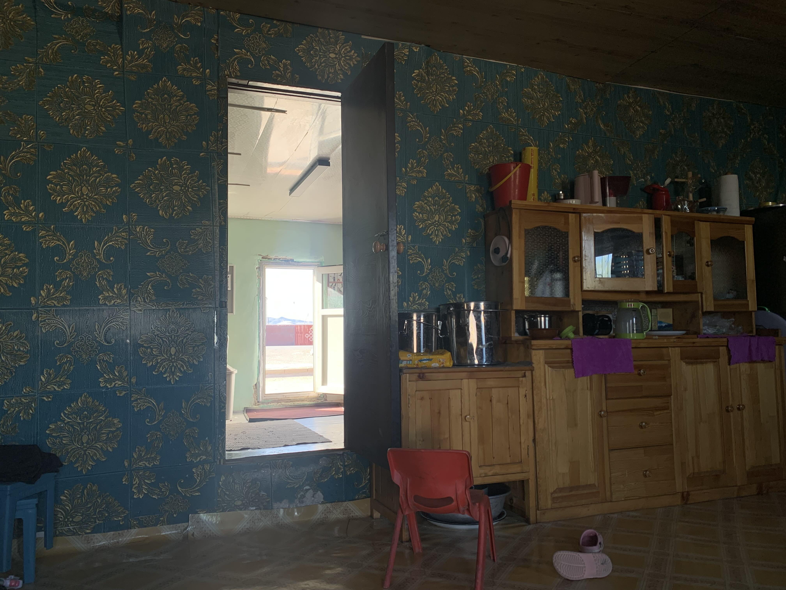

k-Day 116｜觀眾
洗完襪子，曬著衣服。斜躺在帳篷洞口看著眼前的岩壁，流水聲還是和昨晚一樣。接近水面的黑色板岩被前方山壁遮住光線，陰影上有水波流動，像銀色小魚一樣的波光往更高處的岩石游動。

想到以前聽過的說法：「做研究的人心裡是不會有觀眾的，策展人心裡才有觀眾。」不是這樣的，我們就是觀眾。我們並未把自己從名為「觀眾」的群體中分離，而是親眼看著，親身感受一切。沒有更高的台階讓我們急著爬上去向眾人宣告什麼，因此躺在各處山壁前的草地上，思考著大家也想知道，但是沒有閒暇顧及的重要的事。
吃了餃子後跟大家一起到早上經過的河邊洗衣洗澡。
在旁邊看著母女們的家常，一家人的感情真好
今日花費：水＋糧食 196+415元